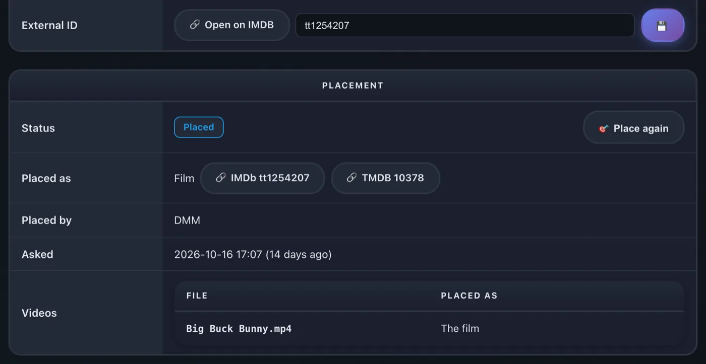

rex مع zurg
rex هو خادم وسائط لتطبيقات Plex الرسمية، ولا يملك أي ملفات. تراه تطبيقات Plex الرسمية كخادم Plex عادي. يمكن لأي تطبيق أن يملأه (rex مع تطبيقك الخاص)، وهذه الصفحة تشرح إعداده باستخدام zurg، الذي يرسل إليه مكتبة debrid الخاصة بك. وعندما تضغط على تشغيل، يبث rex الملف مباشرة من zurg. لا يتم تنزيل أي شيء أولاً.
تأخذك هذه الصفحة من الصفر إلى تشغيل فيلم، خطوة بخطوة. كل خطوة تشرح ما تفعله ولماذا تهم وما الذي يجب أن تراه قبل الانتقال إلى التي بعدها. إذا لم يطابق ما تراه ذلك، توقف عندها، فالخطوة التالية لن تصلح الأمر.

أربعة أشياء يجب أن تعرفها قبل أن تبدأ:
- zurg هو الجزء الذي يتواصل مع خدمة debrid الخاصة بك. يسرد ما هو موجود في حسابك ويقدم الملفات.
- rex هو الجزء الذي تتواصل معه تطبيقات Plex الخاصة بك. لا يحتفظ بأي ملفات ولا يحتاج إلى قرص للوسائط. ولا يحتاج إلى rclone أو إلى mount.
- zurg يخبر rex بوجوده. تعطي zurg عنوان rex، وzurg يتولى الباقي. لا تكتب أبداً تفاصيل zurg في rex بنفسك.
- zurg وDMM يحددان ما هو كل ملف؛ وPlex يصفه. يسأل zurg برنامج DMM عن الفيلم أو الحلقة التي يمثلها كل ملف، ويعرض rex ذلك العنوان مع الملصقات والملخصات التي يوفرها بيانات Plex الوصفية الخاصة به، بعد أن يكون rex متصلاً بحساب Plex. لا يخمّن rex أبداً من اسم الملف.
rex مجاني للاستخدام الشخصي (PolyForm Noncommercial): لا يوجد مستوى للرعاة ولا تحتاج إلى حساب لتنزيله. أما الإصدار الليلي من zurg، الذي يستخدمه هذا الدليل، فيبقى إصداراً للرعاة؛ وrex مع تطبيقك الخاص يشغّل rex دون الحاجة إليه.
قبل أن تبدأ
تتطلب هذه الصفحة إصدار rex اليومي 2026.10.25 أو أحدث وإصدار zurg اليومي 2026.10.27 أو أحدث.
الخطوة 1. تثبيت zurg
ما تفعله. يُنزّل zurg، ويطلب منك بيانات حسابك في debrid، ثم يشغّل zurg كخدمة تعود تلقائياً بعد إعادة تشغيل الجهاز.
لماذا هذا مهم. كل ما يعرضه rex يأتي من zurg. إذا لم يستطع zurg رؤية مكتبتك، فلن يراها rex أبداً.
على Windows وmacOS، ثبّت zurg باستخدام المثبّت أدناه، وليس داخل Docker Desktop. يقرأ rex كل ملف من العنوان الذي يعطيه إياه zurg، ولا يستطيع الوصول إلى zurg الذي يعمل داخل Docker Desktop. عندها ستظهر العناوين، لكن لن يعمل أي شيء.
curl -fsSL https://raw.githubusercontent.com/debridmediamanager/zurg-site/main/public/install.sh | bash
sudo loginctl enable-linger "$USER"يُنزَّل zurg إلى ~/zurg. السطر الثاني يُبقي خدماتك تعمل بعد تسجيل الخروج.
curl -fsSL https://raw.githubusercontent.com/debridmediamanager/zurg-site/main/public/install.sh | bashيُنزَّل zurg إلى ~/zurg. يثبّت المثبّت أيضاً macFUSE، وقد يطلب منك macOS السماح بذلك من System Settings ثم Privacy & Security، ثم إعادة تشغيل الجهاز: zurg على macOS.
في PowerShell:
irm https://raw.githubusercontent.com/debridmediamanager/zurg-site/main/public/install.ps1 | iexيُنزَّل zurg إلى $HOME\zurg (C:\Users\you\zurg). يثبّت المثبّت أيضاً WinFsp، ويطلب موافقة المسؤول، ويشغّل zurg كلما سجّلت الدخول إلى Windows: zurg على Windows.
يسألك المثبّت عن الخدمات التي تستخدمها (اكتب 1 لـ Real-Debrid)، ثم يطلب رمز API الخاص بك. يبقى الرمز مخفياً أثناء لصقه.
ما يجب أن تراه. ينتهي المثبّت بقائمة من أسطر PASS وسطر ==> zurg is installed in مع مجلد zurg. ثم يحمّل zurg مكتبتك: بضع ثوانٍ لحساب صغير، وحوالي عشر دقائق لحساب فيه ألف إصدار على Real-Debrid. افتح لوحة zurg على http://<this machine>:9999: يعرض Library Size عدد عناصرك بعد الانتهاء.
هل سبق أن شغّلت zurg؟ حدّثه وأعد تشغيله بالأمر cd ~/zurg && ./zurg update && ./zurg service restart (على Windows: cd $HOME\zurg; .\zurg.exe update; .\zurg.exe service restart).
الخطوة 2. تثبيت rex
ما الذي يفعله. يُنزّل rex إلى ~/rex ($HOME\rex على Windows) ويشغّله كخدمة، مع كل ما تحتاجه الخطوات اللاحقة. الخطوات بعد هذه لا تحتاج إلى إعادة تشغيل، وفقط الأقسام الاختيارية أدناه هي التي تحتاجها.
لماذا هذا مهم. rex هو ما تتواصل معه تطبيقات Plex لديك. أول تشغيل ينشئ rex.db، وهو يحتفظ بمكتباتك وكل ما يرسله zurg وسجل مشاهدتك.
على Linux يمكنك تشغيل zurg وrex داخل Docker بدلاً من ذلك: انظر
mkdir -p ~/rex && cd ~/rex
TAG=$(curl -fsSL 'https://api.github.com/repos/debridmediamanager/rex/releases?per_page=1' | sed -n 's/.*"tag_name": *"\([^"]*\)".*/\1/p' | head -1)
P=$(uname -s | tr A-Z a-z)-$(uname -m | sed 's/x86_64/amd64/;s/aarch64/arm64/')
curl -fL "https://github.com/debridmediamanager/rex/releases/download/$TAG/rex-$TAG-$P.tar.gz" | tar xz --strip-components=1في PowerShell:
New-Item -ItemType Directory -Force $HOME\rex | Out-Null; cd $HOME\rex
$tag = (Invoke-RestMethod 'https://api.github.com/repos/debridmediamanager/rex/releases?per_page=1')[0].tag_name
curl.exe -fLO "https://github.com/debridmediamanager/rex/releases/download/$tag/rex-$tag-windows-amd64.zip"
tar -xf "rex-$tag-windows-amd64.zip" --strip-components=1; Remove-Item "rex-$tag-windows-amd64.zip"هذا يأخذ أحدث إصدار من rex، عادةً نسخة nightly، المناسبة لجهازك.
اعثر على عنوان LAN الخاص بـ rex، أي عنوانه على شبكتك المنزلية. على Linux يطبع hostname -I عدة عناوين: اختر العنوان الذي على شبكتك المنزلية، وليس العنوان الذي يبدأ بـ 172.17. (Docker) أو 100. (Tailscale). على macOS يطبعه ipconfig getifaddr en0 (أو en1 إذا لم يطبع الأول شيئاً). على Windows يعرضه ipconfig تحت IPv4 Address ضمن المحوّل الخاص بـ Wi-Fi أو Ethernet. هذه الصفحة تكتبه 192.168.1.20 في كل مكان: ضع عنوانك مكانه. تطبيقات Plex وzurg وأوامرك تصل إلى rex عبره.
هل يعمل Plex Media Server على الجهاز نفسه؟ أنهِ أمر تشغيل rex أدناه بـ --port 32500 واستخدم 32500 في أي مكان يذكر فيه أمر أو إعداد 32400، وكذلك في قاعدة جدار حماية Windows: Plex يحجز المنفذ 32400 والمنافذ التي تستخدمها التطبيقات للعثور على الخوادم، وعلى أي منفذ آخر لا يتركها rex إلى Plex. ستعرض تطبيقاتك عندها خادمين باسم الجهاز: rex هو الذي شاركته معك، واسم الحساب الجديد بجانبه. بعد أن يصبح rex على حساب Plex الخاص به (
الآن اجعله خدمة:
أنشئ ~/.config/systemd/user/rex.service:
mkdir -p ~/.config/systemd/user
nano ~/.config/systemd/user/rex.service[Unit]
Description=rex
After=network-online.target
[Service]
WorkingDirectory=%h/rex
EnvironmentFile=-%h/rex/rex.env
ExecStart=%h/rex/rex
Restart=always
RestartSec=5
[Install]
WantedBy=default.targetsystemctl --user daemon-reload
systemctl --user enable --now rex
journalctl --user -u rex -fأمر التشغيل الخاص بـ rex هو سطر ExecStart، والمفاتيح تُوضع في ~/rex/rex.env، بواقع NAME=value في كل سطر. بعد أي تغيير، يعيد الأمر systemctl --user daemon-reload && systemctl --user restart rex تشغيل rex. ويعرض journalctl --user -u rex -f سجلّه.
يشغّل run.sh rex داخل مجلده، ويشغّل LaunchAgent الملف run.sh عند تسجيل دخولك:
cp ~/rex/examples/run.sh.example ~/rex/run.sh
mkdir -p ~/Library/LaunchAgents
cat > ~/Library/LaunchAgents/com.rex.plist <<PLIST
<?xml version="1.0" encoding="UTF-8"?>
<!DOCTYPE plist PUBLIC "-//Apple//DTD PLIST 1.0//EN" "http://www.apple.com/DTDs/PropertyList-1.0.dtd">
<plist version="1.0"><dict>
<key>Label</key><string>com.rex</string>
<key>ProgramArguments</key><array><string>/bin/bash</string><string>$HOME/rex/run.sh</string></array>
<key>RunAtLoad</key><true/><key>KeepAlive</key><true/>
<key>StandardOutPath</key><string>$HOME/rex/rex.log</string>
<key>StandardErrorPath</key><string>$HOME/rex/rex.log</string>
</dict></plist>
PLIST
launchctl load ~/Library/LaunchAgents/com.rex.plist
tail -F ~/rex/rex.logأمر التشغيل الخاص بـ rex هو السطر الأخير في ~/rex/run.sh، والمفاتيح تُوضع في ~/rex/rex.env، بواقع NAME=value في كل سطر. بعد أي تغيير، يعيد الأمر launchctl kickstart -k gui/$(id -u)/com.rex تشغيل rex. ويعرض tail -f ~/rex/rex.log سجلّه.
يعمل rex طالما أنت مسجّل الدخول إلى الـ Mac. إذا كان الـ Mac يعيد التشغيل وحده، فشغّل تسجيل الدخول التلقائي (System Settings، ثم Users & Groups). وإذا كان جدار حماية macOS مفعّلاً، فاسمح لـ rex عندما يسألك macOS، أو أضف ~/rex/rex ضمن Options الخاصة بجدار الحماية.
افتح PowerShell كمسؤول وانتقل إلى مجلد rex بالأمر cd $HOME\rex. أولاً أنشئ run.cmd، وهو يشغّل rex داخل مجلده ويكتب سجلّه في rex.log. ستعرض Notepad إنشاء الملف:
notepad run.cmd@echo off
cd /d "%~dp0"
rex.exe 2>> rex.logاحفظه. ثم اسمح لشبكتك عبر Windows Firewall إلى منفذ rex والمنفذين الخاصين باكتشاف الخوادم، وشغّل rex الآن وكلما سجلت الدخول:
New-NetFirewallRule -DisplayName rex -Protocol TCP -LocalPort 32400
New-NetFirewallRule -DisplayName "rex discovery" -Protocol UDP -LocalPort 32410,32414
$settings = New-ScheduledTaskSettingsSet -ExecutionTimeLimit 0 -AllowStartIfOnBatteries -DontStopIfGoingOnBatteries
Register-ScheduledTask rex -Action (New-ScheduledTaskAction -Execute "$HOME\rex\run.cmd") -Trigger (New-ScheduledTaskTrigger -AtLogOn -User $env:USERNAME) -Settings $settings
Start-ScheduledTask rex; Start-Sleep 3
Get-Content rex.log -Waitأمر التشغيل الخاص بـ rex هو سطر rex.exe في run.cmd، والمفاتيح تُوضع فوقه، بواقع set NAME=value في كل سطر. بعد أي تغيير، يعيد الأمر Stop-Process -Name rex; Start-Sleep 1; Start-ScheduledTask rex تشغيل rex. ويعرض Get-Content $HOME\rex\rex.log -Wait سجلّه.
هل شغّلت rex يدوياً في PowerShell بدلاً من ذلك؟ عندها يبقى سجلّه في تلك النافذة فقط، دون rex.log، ولا توجد مهمة تشغّله بعد إعادة التشغيل. يحتفظ rex بقاعدة بياناته وبمطالبته بالملكية في المجلد الذي يبدأ منه، لذلك فإن rex الذي يبدأ من مجلد آخر يكون خادماً جديداً غير مُطالَب به. أوقفه بـ Ctrl+C، ثم أعد تشغيله من مجلد rex بالخيارات نفسها، أو الأفضل أن تُعدّ المهمة أعلاه.
يعمل rex طالما أنت مسجّل الدخول إلى Windows، في نافذة خاصة به: اتركها مفتوحة. في PowerShell، اكتب curl.exe في أي مكان تذكر فيه هذه الصفحة curl: فالأمر curl المدمج في Windows PowerShell أمر مختلف.
ما يجب أن تراه. بين أول الأسطر:
INFO seeded rex.db: an empty library named yourhost, machine=...
INFO no source yet: a source registers itself once pointed at this server (PUT /rex/sources/{name}, docs/feed-api.md)
INFO claim state: unclaimed
INFO rex on http://192.168.1.20:32400 machine=... items=0 parts=proxyيسمّي rex نفسه باسم الجهاز، وتعرض تطبيقات Plex لديك هذا الاسم. الرسالة no source yet صحيحة: لم يُخبَر zurg عن rex بعد. اترك السجل مفتوحاً.
الخطوة 3. أضفه إلى حساب Plex
ما الذي يفعله. يسجّل rex في حساب Plex، كما تسجّل خادم Plex Media Server حقيقياً، ثم يشاركه مع حسابك الشخصي.
لماذا هذا مهم. يحصل rex على اسم كل عنوان وملصقه وملخصه وأسماء حلقاته من بيانات Plex الوصفية نفسها، ولا يُسمح له بطلبها إلا بعد أن يصبح على حساب. تُسمّى العناوين التي أرسلها zurg قبل التسجيل فور اكتماله. كما أن التسجيل يجعل ميزة Fix Match تعمل، ويُزيل تنبيه "unclaimed"، وهو ضروري قبل
استخدم حساب Plex جديداً لهذه الخطوة، لا حسابك الشخصي. rex ليس من إنتاج Plex، وقد تتخذ Plex إجراءً ضد أي حساب يسجّله. احفظ حسابك الحقيقي، بما فيه سجل المشاهدة والأصدقاء وأي Plex Pass تملكه، بعيداً عن الخطر: أنشئ حساباً مجانياً جديداً على plex.tv بعنوان بريد إلكتروني لا تستخدمه في أي مكان آخر، وسجّل rex عليه، ثم شارِك rex مع حسابك الشخصي. بعدها تشاهد وأنت مسجّل الدخول باسمك، تماماً كما تشاهد خادم صديق. لن يعرض rex أي محتوى قبل إتمام هذه الخطوة.
تسجيل rex على الحساب الجديد
- سجّل الدخول إلى plex.tv باستخدام الحساب الجديد، وافتح plex.tv/claim وانسخ الرمز. تنتهي صلاحيته بعد حوالي خمس دقائق.
-
على الجهاز الذي يعمل عليه rex (استخدم
curl.exeعلى Windows):curl -X POST "http://192.168.1.20:32400/myplex/claim?token=claim-xxxxxxxxxxxx" curl -s http://192.168.1.20:32400/identity
ما الذي يجب أن تراه. يعرض الأمر الثاني claimed="1"، وملف claim_state.json موجود في مجلد rex. احتفظ بنسخة احتياطية من هذا الملف، لأنك إن فقدته ستحتاج إلى ربط الخادم من جديد برمز جديد. ما دام الملف موجودًا، يرفض rex أي عملية ربط ثانية.
شاركه مع حسابك الخاص
- ما زلت مسجّلاً بالحساب الجديد؟ افتح app.plex.tv، ثم Settings (أيقونة المفتاح الإنجليزي)، ثم Manage Library Access وGrant Library Access.
- أدخل اسم المستخدم أو البريد الإلكتروني لحسابك أنت، واختر خادم rex والمكتبتين Movies وTV Shows، ثم أرسل الدعوة.
- سجّل الخروج، وادخل بحسابك أنت، واقبل الدعوة. تصلك الدعوة عبر البريد الإلكتروني وداخل app.plex.tv.


ما الذي يجب أن تراه. عند تسجيل دخولك بحسابك، تعرض تطبيقات Plex خادم rex بجانب خوادمك الخاصة، مع المكتبتين، وتكونان فارغتين حتى الخطوة التالية. سجلّ المشاهدة الخاص بك على rex يخصّك وحدك، ويُحفظ منفصلاً عن سجلّ الحساب الجديد. شاركه بالطريقة نفسها مع أي شخص آخر في منزلك.
الخطوة 4. ربط zurg بـ rex
ما الذي تفعله. تُخبر zurg بمكان rex. يعرّف zurg نفسه إلى rex، ويرسل مكتبته كاملة، ويقرأ تفاصيل الفيديو والصوت لكل ملف ويرسلها أيضًا، ثم يرسل كل تغيير فور حدوثه.
لماذا هذا مهم. هذه هي الصلة الوحيدة بين الاثنين. لا يحتوي rex على إعداد خاص بـ zurg: إذا كان rex_url مفقودًا، سيبقى rex فارغًا. يجب أن يكون rex_url دائمًا عنوان http:// العادي لـ rex على شبكتك، وليس عنوان HTTPS من
لن يبدأ zurg بالمفتاح نفسه مرتين، وتكتب لوحة تحكم zurg القيمة dmm_api_key في ملف الإعداد عندما تُدخل مفتاحك هناك. إذا لم يكن لديك مفتاح DMM، فاترك dmm_api_key خارج الملف.
أولًا تحقق مما إذا كان ملف إعداد zurg يحتوي على أحد السطرين:
grep -n '^rex_url:\|^dmm_api_key:' ~/zurg/config.ymlإذا طبع الأمر سطرًا، فهذا المفتاح مضبوط بالفعل. غيّره هناك باستخدام nano ~/zurg/config.yml، واتركه خارج أمر printf أدناه.
printf '\nrex_url: http://192.168.1.20:32400\ndmm_api_key: your_dmm_key\n' >> ~/zurg/config.yml
cd ~/zurg && ./zurg service restartافتح ملف إعداد zurg بالأمر notepad $HOME\zurg\config.yml. إذا كان يحتوي بالفعل على السطر rex_url: أو dmm_api_key:، فغيّر ذلك السطر. أضف الأسطر الأخرى في نهاية الملف:
rex_url: http://192.168.1.20:32400
dmm_api_key: your_dmm_keyاحفظ الملف وأعد تشغيل zurg:
cd $HOME\zurg; .\zurg.exe service restartما الذي يجب أن تراه. بعد أن يعيد zurg تحميل المكتبة، يكتب سجل zurg (~/zurg/logs/zurg.log، وعلى ويندوز $HOME\zurg\logs\zurg.log) السطر DMM placed N releases (وإذا لم يكن لديك مفتاح DMM: Placed N releases by their names (no DMM sponsor key))، ويطبع سجل rex:
INFO SOURCES zurg registered at http://192.168.1.20:9999/dav
INFO SOURCES PUT /rex/sources/zurg -> 200
INFO FEED zurg upsert: 0 created, 0 updated, 200 held, 0 unchanged, 0 rejected
INFO FEED identified "Sintel.mp4" -> movie tmdb:45745 (placed)
INFO FEED zurg upsert: 2 created, 0 updated, 0 held, 0 unchanged, 0 rejectedيقرأ rex كل ملف من العنوان الموجود في السطر registered at، لذلك يجب أن يصل إليه zurg على هذا العنوان. لا يكتب rex هذا السطر من جديد إلا عندما يتغير العنوان.
تعني الحالة held أن zurg لم يقرأ تفاصيل هذا الملف بعد. يبدأ zurg قراءتها فور اكتمال تحميل المكتبة، واحدًا تلو الآخر، وتصل حلقات الموسم الكامل معًا. ومع مفتاح DMM يصل ما يصل إلى نحو 20 إصدارًا في الدقيقة من التفاصيل المخزنة لدى DMM. قد تستغرق المكتبة الكبيرة عدة ساعات حتى تكتمل. يظهر كل عنوان في rex فور وصول تفاصيله. وأي شيء تضيفه لاحقًا إلى حسابك لدى خدمة الـ debrid سيظهر تلقائيًا بعد أن يقرأه zurg.
إذا لم يحدث ذلك.
-
لا شيء على الإطلاق في سجل rex: إما أن zurg ما زال يحمل المكتبة، أو أن zurg قديم (حدّثه كما في
step 1 )، أو أنrex_urlيحتوي على خطأ مطبعي. يعرض الأمرgrep 'rex feed' ~/zurg/logs/zurg.log | tail -n 5ما يحدث في جانب zurg (وعلى ويندوزSelect-String 'rex feed' $HOME\zurg\logs\zurg.log | Select-Object -Last 5). إذا لم يظهر السطرrex feed: pushing the library to ...، فهذا يعني أن zurg لم يقرأrex_url. أما السطرrex feed: snapshot failed, retrying in ...فيعني أنه لا يستطيع الوصول إلى rex على ذلك العنوان. -
يبقى العنوان في حالة
heldويكتب zurgCannot probe file ...: فشلت أول قراءة من خدمة الـ debrid. سيحاول zurg مرة أخرى تلقائيًا، لكن Analyze & Tag Library ضمن Utilities في لوحة تحكم zurg يحاول فورًا.
-
تصل العناوين لكن لا تظهر أسطر
identified: لم يتمكن zurg من مطابقتها بالاسم. وإذا كانdmm_api_keyمضبوطًا ويكتب zurgDMM refused the API key for placement، فهذا يعني أن المفتاح ليس لأحد الرعاة. عندها يطابق zurg بالاسم، ويعيد محاولة المفتاح بعد يوم، أو فورًا عند إعادة التشغيل. -
تظهر العناوين لكن لا شيء يعمل: لا يستطيع rex الوصول إلى zurg على العنوان الموجود في
registered at. يتحقق صفupstream failedفيWhen something is wrong من ذلك.
هل تشغّل عدة نسخ من zurg (واحدة لكل خدمة debrid)؟ أعطِ كل نسخة اسمًا خاصًا بها بإضافة سطر إضافي، مثل rex_source: rd وrex_source: tb وهكذا. تملأ جميع هذه النسخ المكتبات نفسها.
لماذا يضع DMM الملفات هنا
الملف الذي لا يستطيع zurg وضعه في مكانه يبقى غير مطابق: فيلم يحمل عنوان ملفه، أو حلقة في مسلسل يحمل اسم الإصدار، مرقّمة حسب ترتيب الملفات. مع مفتاح DMM يسأل zurg DMM عنه مرة أخرى بعد يوم. ويمكنك أن تصلحه بنفسك باستخدام Fix Match في تطبيق Plex، وأنت مسجّل الدخول بالحساب الجديد الذي يملك rex (يرفض rex هذا الملف للحسابات التي شارك معها المكتبة). العنوان الذي صححته بـ Fix Match يبقى كما حددته.


تعرض لوحة zurg ما فعله مع كل إصدار. افتح الإصدار في Torrent Manager وانظر إلى Placement. الزر Place again يسأل DMM مرة أخرى، وإذا كتبت معرّف IMDb في External ID فسيُوضع الملف حسب هذا المعرّف.

الخطوة 5. شاهد شيئًا
ما تفعله. يفتح rex داخل تطبيق Plex، تماماً كما تفتح أي خادم Plex.
لماذا يهم. هذه غاية الإعداد كله. كما أنها تثبت الحلقة الأخيرة: قراءة rex لملف من zurg أثناء مشاهدتك.
افتح تطبيق Plex (وليس متصفح ويب) على هاتف أو تلفاز أو حاسوب على نفس الشبكة المنزلية. يظهر rex باسم الجهاز، مع Movies وTV Shows. اختر فيلماً واضغط تشغيل.

في المنزل لا تحتاج إلى شيء آخر: تجد تطبيقات Plex خادم rex عبر الاكتشاف المحلي الخاص بـ Plex وتتصل به عبر شبكتك. يتطلب ذلك أن يكون الجهاز على نفس الشبكة التي يعمل عليها rex (وليس شبكة Wi-Fi للضيوف أو VLAN منفصلة). يعمل الاكتشاف على منفذي UDP رقم 32410 و32414، لذا يجب أن يسمح جدار الحماية على جهاز rex بمرورهما (على Windows، تتكفل قواعد جدار الحماية في الخطوة 2 بذلك). يجيب rex على الاكتشاف عندما يستخدم المنفذ 32400. وإذا نقلت rex إلى المنفذ 32500 لأن Plex يعمل على الجهاز نفسه، يُترك الاكتشاف لذلك Plex، وتجد التطبيقات rex عبر حساب Plex الذي http://192.168.1.20:32400/web فليس Plex Web: لا يملك rex تطبيق ويب خاصاً به، وتلك الصفحة لا تقول إلا ما إذا كان rex قد طُولب به وأين تشاهد.
ما يجب أن تراه. ملصقات وعناوين وسنوات كما في أي خادم Plex، ويعمل الفيلم.
أمران قد تصادفهما:
- "yourhost server is unclaimed and not secure". يقول تطبيق Plex هذا عن أي خادم غير مرتبط بحساب Plex، ولن يشغّل rex أي شيء قبل أن يُربط بحساب. نفّذ
الخطوة 3 . ولا تضغط Claim it now وأنت مسجل الدخول بحسابك الشخصي: فذلك يسجل rex على حسابك أنت. - "This server is not powerful enough to convert video". إذا فشلت كل العناوين على كل الأجهزة، فانظر في سجل rex مباشرة بعد أن تضغط تشغيل: إن ظهر فيه
upstream failedأو502فهذا يعني أن rex لا يستطيع الوصول إلى zurg، ولن يحل FFmpeg المشكلة. يوضح الصفupstream failedفيعند حدوث خطأ ما يجب فعله. أما إن فشلت بعض الملفات فقط، وغالباً في متصفح الويب فقط، فالجهاز لا يستطيع تشغيلها كما هي، وغالباً بسبب صوت AC3 أو DTS. تشغّل تطبيقات Plex على التلفاز والهاتف معظم الملفات كما هي. ولتشغيل كل شيء على كل الأجهزة، أعدّتحويل الفيديو .
لا تحتاج المجلدات الأخرى في zurg غير movies وshows، مثل anime، إلى أي إعداد: يذهب كل ملف إلى Movies أو TV Shows حسب ما يقوله zurg عنه. أما الملف الذي لا يستطيع zurg تحديد أنه حلقة فينتظر في Movies.
لإعطاء أحد هذه المجلدات مكتبات خاصة به، أضف rex_movies تحته في ملف config.yml الخاص بـ zurg لمجلد أفلام، وrex_shows لمجلد مسلسلات، وكليهما فقط إن احتوى المجلد على الاثنين، بجانب مرشحاته، ثم أعد تشغيل zurg كما في rex_shows يحصل على مكتبة مسلسلات فارغة. يضع DMM بعض ملفات المجلد كأفلام والبعض الآخر كحلقات، والنوع الذي لا عنوان له يذهب إلى Movies أو TV Shows:
directories:
anime:
rex_shows: Anime
rex_movies: Anime Movies
films:
rex_movies: Filmsبعد أن يُحمَّل zurg، ينشئ rex Anime وAnime Movies وFilms وينقل إليها ما كان يعرضه من anime كما هو: سجل المشاهدة وFix Match والتعديلات كلها تبقى. وإذا كان Plex Web مفتوحاً، تظهر هذه المكتبات فوراً تحت More في شريطه الجانبي، ويمكنك تثبيتها. شاركها مع حسابك الخاص كما في rex_shows أو rex_movies من إعداد zurg، تبقى المكتبة التي أنشأها rex لها، فارغة أو غير فارغة: احذفها في تطبيق Plex وأنت مسجل الدخول بالحساب الجديد. وإن لم تظهر مكتبة، فسجل zurg أو سجل rex يوضح السبب.

الحذف في تطبيق Plex يحذف من حسابك في خدمة التخزين السحابي
وأنت مسجل الدخول بالحساب الجديد، يحذف Delete على فيلم أو حلقة ملفه في zurg أيضاً، ويزيل zurg التورنت من حسابك في خدمة التخزين السحابي بمجرد ألا يبقى أي من ملفاته. ولا تستطيع الحسابات التي تُشارَك مع rex، ومنها حسابك أنت، الحذف. لإيقاف الحذف: في app.plex.tv وأنت مسجل الدخول بالحساب الجديد، افتح Settings، ثم Library الخاصة بخادم rex، ثم Show Advanced، وألغِ تحديد Allow media deletion واحفظ. عندئذ يرفض rex كل عملية حذف.

أما العنوان الذي يخرج من حسابك في خدمة التخزين السحابي بطريقة أخرى، كأن يُزال هناك أو يزيله zurg، فينتقل إلى سلة المهملات الخاصة بالمكتبة في rex كما يحدث في Plex: يبقى غير متاح مع سجل مشاهدته، ويعود كما كان إن أعاده zurg. يفرّغ Empty Trash على المكتبة هذه العناوين نهائياً، ويفعل ذلك Empty trash automatically after every scan (في Settings، ثم Library) تلقائياً، وهو معطّل افتراضياً.
انسخ احتياطياً ملف rex.db في مجلد rex (يحتوي على مكتبتك وسجل مشاهدتك وتسجيل دخولك إلى zurg، فأبقه خاصاً)، وبمجرد أن تتوفر لديك، claim_state.json وrex-direct.json (ربط الخادم، ومفتاح شهادة rex-direct):
sudo apt install -y sqlite3 # once, on Linux; macOS has it
mkdir -p ~/rex-backup
sqlite3 ~/rex/rex.db ".backup $HOME/rex-backup/rex.db"
cp ~/rex/*.json ~/rex-backup/لا يحتوي Windows على sqlite3، لذا أوقف rex للحظة وانسخ rex.db مع الملفين اللذين يبدآن بالاسم نفسه بجانبه:
Stop-Process -Name rex; Start-Sleep 1
New-Item -ItemType Directory -Force $HOME\rex-backup | Out-Null
Copy-Item $HOME\rex\rex.db*, $HOME\rex\*.json $HOME\rex-backup
Start-ScheduledTask rexفي Docker تقع الملفات في ~/rex/config، ولا يقرؤها إلا root. انسخ احتياطياً من داخل الحاوية بالأمر docker exec rex sqlite3 /config/rex.db ".backup /config/rex.db.bak"، ثم mkdir -p ~/rex-backup && sudo cp ~/rex/config/rex.db.bak ~/rex/config/*.json ~/rex-backup/.
تُعيد
انتهيت. الأقسام التالية اختيارية.
الاستخدام خارج منزلك (اختياري)
ماذا يفعل. يمنح rex عنوان HTTPS يمكن لتطبيقات Plex خارج المنزل الوصول إليه، ويُبلغ plex.tv بهذا العنوان.
لماذا هذا مهم. خارج المنزل، لا يتصل app.plex.tv إلا بعنوان HTTPS، وتفضّل تطبيقات Plex الأخرى ذلك أيضاً. يمكن لخادم Plex حقيقي أن يعود إلى مرحّل Plex عند الحاجة، أما rex فلا يستطيع ذلك، لذا أنت من يختار طريقة الوصول إليه. يجب أن /rex/ (
Plex Pass. يعمل Plex Web خارج المنزل دون Plex Pass أو Remote Watch Pass على أي من الحسابين. أما تطبيقات Plex الأخرى فلم تُختبر خارج المنزل بعد.
أياً كان ما تختاره، كل بايت تشاهده خارج المنزل يمر عبر سرعة الرفع في اتصالك المنزلي. اتصال رفع بسرعة 20 Mbit/s يكفي لفيلم 1080p WEB-DL بسلاسة، لكنه لا يكفي لملف remux.
أيّهما تستخدم
غير مستحسن:
- Cloudflare tunnel. كل بايت يمر عبر Cloudflare، التي تُسقط أيضًا
Rangeللقراءة الأولى للملف، لذا يسحب كل بدء تشغيل للملف الملف كاملاً من خدمة debrid الخاصة بك. - Tailscale Funnel, ngrok and other hosted tunnels. تحدّ من عرض النطاق الترددي أو البيانات الشهرية، وهي تنفد بسرعة مع فيلم واحد. كما ينشر Tailscale Funnel كل rex، بما في ذلك الواجهة البرمجية (API) التي يدفع إليها zurg: يستطيع أي شخص على الإنترنت الإضافة إلى تلك المكتبة أو الحذف منها.
- Forwarding port 32400 without rex-direct or a certificate of your own. ستحصل تطبيقات Plex على عنوان HTTP عادي، ويرفضه app.plex.tv.
rex-direct
rex-direct هو رد DMM على plex.direct، وهو مفعّل افتراضيًا. على جهاز التوجيه (الراوتر) لديك، وجّه المنفذ 32400 (TCP) إلى جهاز rex. هذا كل شيء، ولا حاجة لإعادة تشغيل أي شيء.
بعد ربط rex، يعطيك DMM اسمين: <hash>.rex-direct.debridmediamanager.com، ويشير إلى عنوان IP العام لمنزلك، وlan.<hash>.rex-direct.debridmediamanager.com، ويشير إلى عنوان IP الخاص بـ rex داخل شبكتك المحلية، مع شهادة لكليهما. تستغرق الشهادة الأولى بضع دقائق. يخبرك سجل rex بأنها قيد الإصدار، ثم يعرض كل اسم في سطر rex-direct:. يلتقط rex عنوان IP المنزلي الجديد وتجديدات الشهادة تلقائيًا. يمكن لحساب Plex واحد أن يحتوي على ما يصل إلى عشرة أسماء rex-direct. في المنزل، يمكن لتطبيقات Plex، بما فيها app.plex.tv، استخدام اسم lan.، فيصل إلى rex مباشرة عبر شبكتك. لذلك لا تحتاج إلى توجيه المنفذ إلا عندما تكون خارج المنزل. في app.plex.tv، اسمح بالوصول إلى الأجهزة على شبكتك المحلية عندما يطلب ذلك Chrome، وإلا فسيعود التطبيق إلى الاسم العام، الذي يحتاج إلى توجيه المنفذ. يتحقق
إذا كان جهاز التوجيه لديك يوجّه منفذًا خارجيًا مختلفًا إلى rex، فأضف المفتاح REX_DIRECT_PORT=<that port> كما يوضح
rex-direct عبر IPv6
لاتصال بدون عنوان IPv4 عام (CGNAT أو DS-Lite) ولكن لديه IPv6. بعد أن يتصل DMM بـ rex عبر عنوان IPv6 الخاص به ويجد الخادم نفسه هناك، يوجّه اسم rex-direct الخاص بـ rex إلى هذا العنوان أيضًا. تحتاج إلى rex بالإصدار الليلي 2026.11.08 أو أحدث، وفي Docker تحتاج إلى host networking.
لا يوجد إعادة توجيه للمنافذ في IPv6، ولا ربط للمنافذ أيضًا: يجب أن يستخدم rex المنفذ نفسه من الداخل والخارج، لذا اترك REX_DIRECT_PORT غير مضبوط. في جدار الحماية الخاص بجهاز التوجيه، اسمح بالاتصالات الواردة عبر TCP على المنفذ 32400 إلى جهاز rex عبر IPv6. يعرض rex عنوان IPv6 الخاص به بعد دقيقة من بدء تشغيله (أو من المطالبة به)، ثم كل 6 ساعات، لذا أضف القاعدة قبل تشغيل rex، أو أعد تشغيله بعد إضافتها. بعد دقيقة تقريبًا، يُظهر السجل العنوانين معًا:
rex-direct: https://<hash>.rex-direct.debridmediamanager.com:32400 -> <IPv4> and <IPv6>إذا لم يظهر أي سطر يحتوي على and <IPv6> خلال بضع دقائق، فهذا يعني أن DMM لم يستطع الوصول إلى rex عبر IPv6: تحقّق من قاعدة جدار الحماية، ومن أن rex في Docker يستخدم host networking. على Windows، يعرض rex عنوان IPv6 المؤقت الخاص بـ Windows، والذي يستبدله Windows تقريبًا يوميًا: أوقف العناوين المؤقتة باستخدام الأمر netsh interface ipv6 set privacy state=disabled في PowerShell بصلاحيات المسؤول، ثم أعد تشغيل rex حتى يعرض العنوان الثابت. أما <IPv4> في ذلك السطر فهو العنوان المشترك لمزود الخدمة، ولا يصل إلى rex، لذا يجب أن تكون الأجهزة التي تشاهد عليها متصلة بـ IPv6 أيضًا. معظم شبكات الهاتف المحمول تدعم IPv6؛ أما شبكة الفندق أو المكتب التي تدعم IPv4 فقط فلا يمكنها الوصول إلى rex بهذه الطريقة.
Tailscale serve
ثبّت Tailscale على جهاز rex وعلى الأجهزة التي تشاهد عليها، وسجّل الدخول بالحساب نفسه. ثم على جهاز rex:
sudo tailscale serve --bg 32400على Windows، شغّله في PowerShell كمسؤول بدون sudo. على macOS، استخدم أداة سطر الأوامر الموجودة في تطبيق Tailscale بدون sudo.
ستطبع العنوان، على سبيل المثال https://myhost.tailnet.ts.net. أعطِه لـ rex مع إضافة :443 إليه: أضف الخيار --announce-url https://myhost.tailnet.ts.net:443 إلى أمر التشغيل الخاص بـ rex من
يربط Tailscale أجهزتك ببعضها مباشرةً، لذلك لا يمر البث عبر خوادم Tailscale إلا في الشبكات التي تحجب ذلك.
Caddy
تحتاج إلى توجيه المنفذ 443 في جهاز الراوتر الخاص بك إلى جهاز rex، وإلى اسم يشير إلى عنوان IP المنزلي:
- نطاقك الخاص: سجل
Aمثلrex.example.comيشير إلى عنوان IP المنزلي. - بدون نطاق: استخدم
1-2-3-4.sslip.ioمع أرقام عنوان IP العام الخاص بك (يعرضه الأمرcurl -s ifconfig.me). هذا الاسم يُحلّ دائمًا إلى ذلك العنوان. إذا تغيّر عنوان IP، فحدّث الاسم.
ثبّت Caddy وأعطه ملف Caddyfile التالي (/etc/caddy/Caddyfile مع حزمة Caddy لنظام Linux؛ وعلى macOS وWindows ملف باسم Caddyfile داخل مجلد خاص به، ويقرأه الأمر caddy run من داخل ذلك المجلد):
rex.example.com {
respond /rex/* 403
reverse_proxy 192.168.1.20:32400
}respond /rex/* 403 يُبقي الـ API الذي يرسل إليه zurg البيانات بعيدًا عن الإنترنت. ولا يزال zurg يصل إليه عبر http://192.168.1.20:32400. بعد ذلك، أعد تحميل Caddy (sudo systemctl reload caddy مع حزمة Linux). وعلى macOS وWindows، شغّل caddy run من داخل مجلده بدلًا من ذلك، وأبقِه يعمل بالطريقة نفسها التي تُبقي بها rex يعمل في
يحصل Caddy على شهادة عند تحميل الملف ويجدّدها بنفسه. أضف في نهاية أمر تشغيل rex الخيار --announce-url https://rex.example.com:443، ثم أعد تشغيل rex.
خادم VPS صغير
لأي اتصال ليس له عنوان IP عام أصلاً، أو عند المشاهدة من شبكات لا تدعم IPv6: عندها يمرّ كل البث عبر الـ VPS، بدلاً من
تحتاج إلى عنوان IP الخاص بالـ VPS (1.2.3.4 في الأسفل)، والمنافذ 443 و80 و7000 مفتوحة عليه، وسلسلة عشوائية طويلة للنفق (openssl rand -hex 32).
على الـ VPS، ثبّت frp (برنامج frps) وCaddy. أنشئ frps.toml:
bindPort = 7000
auth.token = "your-long-random-string"
proxyBindAddr = "127.0.0.1"proxyBindAddr يُبقي طرف النفق على loopback الخاص بالـ VPS، فلا يصل الإنترنت إلى rex إلا عبر Caddy. أنشئ /etc/caddy/Caddyfile، مع استخدام عنوان الـ VPS بصيغة 1-2-3-4.sslip.io (اسم مجاني يشير دائماً إلى ذلك العنوان) أو نطاقك الخاص الموجَّه إليه:
1-2-3-4.sslip.io {
respond /rex/* 403
reverse_proxy 127.0.0.1:32400
}respond /rex/* 403 يمنع الإنترنت من الوصول إلى الـ API الذي يدفع إليه zurg. شغّل frps -c frps.toml كخدمة، ثم نفّذ sudo systemctl reload caddy.
على جهاز rex، ثبّت frp أيضاً (برنامج frpc) وأنشئ frpc.toml:
serverAddr = "1.2.3.4"
serverPort = 7000
auth.token = "your-long-random-string"
[[proxies]]
name = "rex"
type = "tcp"
localIP = "192.168.1.20"
localPort = 32400
remotePort = 32400شغّله كخدمة: على Linux مثلاً ~/.config/systemd/user/frpc.service مع ExecStart=%h/frp/frpc -c %h/frp/frpc.toml وRestart=always؛ وعلى macOS وWindows، شغّل frpc -c frpc.toml بالطريقة نفسها التي --announce-url https://1-2-3-4.sslip.io:443، وأضف المفتاح REX_DIRECT_URL=off (خلف CGNAT لا يصل IPv4 لاسم rex-direct إلى rex، لذا لا يجب أن يدرجه plex.tv)، ثم أعد تشغيل rex. عندها يمرّ app.plex.tv في المنزل عبر الـ VPS أيضاً، أما تطبيقات Plex الأخرى في المنزل فتتصل بـ rex مباشرة.
ما الذي يجب أن تراه
curl -s https://lan.<hash>.rex-direct.debridmediamanager.com:32400/identityتُظهر صفحة XML قصيرة فيها machineIdentifier الخاص بـ rex على جهاز الكمبيوتر في المنزل، ولا يُظهر curl أي شيء عندما يكون العنوان أو شهادته خاطئة. استخدم عنوانك الخاص: يسجّله rex عند التشغيل بهذا الشكل rex-direct: https://lan.<hash>.rex-direct.debridmediamanager.com:32400 -> 192.168.1.20 (LAN) (مع REX_DIRECT_URL=off لن يظهر هذا السطر). افتح عنوانك الخارجي مع إضافة /identity إليه في متصفح الهاتف مع إيقاف Wi-Fi. إذا كنت تستخدم rex-direct فهو سطر rex-direct: الآخر الذي يكتبه rex، وإذا كنت تستخدم Tailscale serve فالعنوان https://myhost.tailnet.ts.net، ولن يفتحه الهاتف إلا مع تشغيل Tailscale. تُظهر الصفحة صفحة XML قصيرة دون أي تحذير بشأن الشهادة.
إذا فشل الهاتف، فقد يكون السبب أن المنفذ غير مُحوَّل (أو غير مسموح به
يذكر سجل rex العناوين التي يعلنها:
INFO heartbeat every 600s for machine ... -> https://myhost.tailnet.ts.net:443,http://192.168.1.20:32400يطبع rex هذا عند كل تشغيل. وتظهر المشكلات لاحقاً على هيئة heartbeat failed أو announced but NOT visible. وإلا فإن الخادم يسرد هذه العناوين على plex.tv، وتختار تطبيق Plex البعيد عن المنزل العنوان الذي يستطيع الوصول إليه. إذا سجّل rex الرسالة waiting for a claim، فنفّذ
سجل مشاهداتك من خادم Plex آخر (اختياري)
هل شاهدت من قبل على خادم Plex آخر؟ بعد أن تصبح مكتبتك في rex، يمكنك نقل سجل مشاهدتك، فينسخ ما شاهدته ومكان توقفك وتقييماتك بالنجوم من هناك، لكل شخص على حدة.
Sonarr وRadarr وBazarr (اختياري)
لا يحتاج rex إلى mount، لكن Sonarr وRadarr يحتاجانه، فهما يستوردان إلى mount الخاص بـ zurg تحت __magic__. أعدّهما مع zurg كما يوضح دليل Sonarr وRadarr للتورنتات أو لـ Usenet، فكل ما يجلبانه يصل إلى rex عبر zurg مثل أي شيء آخر. الترجمات التي يحفظها Bazarr بجانب هذه الملفات المستوردة تظهر في rex خلال دقيقة تقريباً: الترجمات مع Bazarr. يمكن لـ zurg واحد أن يجمع حساب debrid الخاص بك وUsenet في مكتبة واحدة (Usenet)، ونسختان من الفيلم نفسه تظهران كعنوان واحد في rex، مع نسخة مستقلة لكل منهما.
تحويل الفيديو (اختياري)
ما تفعله. تتيح لـ rex تحويل ما لا يستطيع الجهاز تشغيله، تماماً كما يفعل Plex.
لماذا يهم. بدونها، يظهر على جهاز لا يستطيع تشغيل الملف كما هو الخطأ "This server is not powerful enough to convert video". متصفحات الويب تواجه هذا أكثر من غيرها، مثلاً مع صوت AC3 أو DTS. عندما تفشل كل العناوين على كل الأجهزة، فالسبب شيء آخر: انظر
ثبّت jellyfin-ffmpeg 8، وليس ffmpeg الموجود في نظامك. فهذه هي النسخة التي يُقاس بها أداء rex، والنسخة الوحيدة التي تحوّل كل ملفات Dolby Vision، وتعدّل نطاق HDR على شريحة الرسوميات، وترسم الترجمات هناك. أي FFmpeg آخر يحوّل الفيديو العادي، وسجل rex يخبرك بما ينقصه (النسخة الموجودة في Ubuntu 22.04 تنحرف أيضاً بضع ثوانٍ عن الموضع الصحيح). يجدها rex بنفسه.
تُوضع الحزمة في /usr/lib/jellyfin-ffmpeg بجانب أي FFmpeg آخر. السطر الأول يختار النسخة المناسبة لنظامك: توجد نسخ لـ Ubuntu 22.04 و24.04 و26.04 وDebian 12 و13، على amd64 أو arm64. وعلى أي نظام آخر يتوقف curl مع خطأ.
DEB=jellyfin-ffmpeg8_8.1.3-1-$(. /etc/os-release; echo "$VERSION_CODENAME")_$(dpkg --print-architecture).deb
curl -fLO "https://github.com/jellyfin/jellyfin-ffmpeg/releases/download/v8.1.3-1/$DEB"
sudo apt install -y "./$DEB" && rm "$DEB"
systemctl --user restart rexعلى أي توزيعة Linux أخرى، فكّ حزمة jellyfin-ffmpeg المحمولة (portable) داخل ~/rex/ffmpeg، حيث يبحث rex عنها، ثم أعد تشغيل rex. تستخدم هذه النسخة برنامج تشغيل الرسوميات في نظامك، لذا على نظام أقدم تحوّل على المعالج فقط. استخدم الحزمة حيثما توفرت.
B=$( [ "$(uname -m)" = aarch64 ] && echo linuxarm64 || echo linux64 )
mkdir -p ~/rex/ffmpeg && curl -fL "https://github.com/jellyfin/jellyfin-ffmpeg/releases/download/v8.1.3-1/jellyfin-ffmpeg_8.1.3-1_portable_${B}-gpl.tar.xz" | tar xJ -C ~/rex/ffmpegمع شريحة رسوميات من Intel أو AMD، شغّل أيضاً sudo usermod -aG render "$USER" وأعد التشغيل حتى تنضم الخدمة إلى المجموعة. وداخل LXC، مرّر وحدة GPU إلى الحاوية. الشريحة تجعل التحويل سريعاً، وبدونها يستخدم rex المعالج. وعند عدم وجود شريحة Intel أو AMD، يحاول rex أيضاً مشفّر بطاقة NVIDIA. على Intel، يحوّل sudo apt install intel-opencl-icd أيضاً HDR وDolby Vision على الشريحة، بسرعة قريبة من الزمن الحقيقي لدقة 4K على Intel صغير. وبدونه يُحوَّلان على المعالج، وهو ما لا يستطيع Intel منخفض الاستهلاك فعله بالزمن الحقيقي بدقة 4K.
تُوضع النسخة المحمولة في ~/rex/ffmpeg، حيث يبحث عنها rex:
B=$( [ "$(uname -m)" = arm64 ] && echo macarm64 || echo mac64 )
mkdir -p ~/rex/ffmpeg && curl -fL "https://github.com/jellyfin/jellyfin-ffmpeg/releases/download/v8.1.3-1/jellyfin-ffmpeg_8.1.3-1_portable_${B}-gpl.tar.xz" | tar xJ -C ~/rex/ffmpeg
launchctl kickstart -k gui/$(id -u)/com.rexعلى جهاز Mac يحوّل rex دائماً على المعالج، إذ لا توجد طريقة لاستخدام شريحة رسوميات الجهاز.
تُوضع النسخة المحمولة في مجلد باسم ffmpeg داخل مجلد rex، حيث يبحث عنها:
cd $HOME\rex
curl.exe -fLO https://github.com/jellyfin/jellyfin-ffmpeg/releases/download/v8.1.3-1/jellyfin-ffmpeg_8.1.3-1_portable_win64-clang-gpl.zip
Expand-Archive jellyfin-ffmpeg_8.1.3-1_portable_win64-clang-gpl.zip ffmpeg
Remove-Item jellyfin-ffmpeg_8.1.3-1_portable_win64-clang-gpl.zip
Stop-Process -Name rex; Start-Sleep 1; Start-ScheduledTask rexعلى Windows يحوّل rex عبر مشفّر بطاقة NVIDIA إن وُجدت، وإلا فعلى المعالج.
ما يجب أن تراه. سجل rex فيه سطر transcoder: يذكر FFmpeg والعتاد الذي وجده (hardware none تعني المعالج). وtranscoder off عند البدء تعني أنه لم يجد أيّاً منهما. الملف الذي كان يفشل من قبل يعمل الآن، ويُظهر السجل ما جرى تحويله، مثلاً video=copy h264 audio=ac3->aac 6ch.
الترجمات في الملف المحوَّل: تُدمج الترجمة المصوّرة في الصورة، وتبقى الترجمة التي رفعتها كما هي. تحتفظ Plex على Android وiOS أيضاً بالترجمة النصية كمسار منفصل، أما التطبيقات الأخرى فترسمها داخل الصورة. والتنزيلات غير المتصلة المحوَّلة ما زالت تُغفل الترجمات النصية.
الترجمات
ما الذي يفعله. تبحث ميزة Search Subtitles في تطبيق Plex عن ترجمات من مزود Plex نفسه بعد ربط rex. يتحقق rex من الترجمة التي تختارها مقابل الملف، ويصحح توقيتها إذا تأخرت أو كانت مُعدّة لمعدل إطارات مختلف. عندما يكون حساب Plex الخاص بك مضبوطًا على عرض الترجمات ولا يوجد للعنوان ترجمة بلغتك، يبحث rex عن واحدة لمدة تصل إلى 3 ثوانٍ قبل أن يبدأ التشغيل.
لماذا يهم. غالبًا ما تكون النتيجة الأولى من Plex نفسها غير متزامنة مع الملف.

لا يحتاج الأمر إلى أي إعداد. يتحقق rex من الترجمة مقابل نص الترجمة المدمج في الملف عندما يكون موجودًا. أما الملف الذي لا يحتوي على نص فيُقارَن صوته عند الضغط على تشغيل، وهذا يتطلب إعداد
ما الذي يجب أن تراه. يحتوي سجل rex على سطر SUBTITLE measured لكل ترجمة يتحقق منها، وسطر SUBTITLE applied ... corrected by عندما يصحح واحدة.
قدرات الأفلام والمسلسلات
أما التنزيلات وتخطّي المقدمة والنهاية وصور المعاينة عند التقديم والإعدادات الأخرى للخادم، فهي موجودة في دليل إعداد rex. الموسيقى والتلفزيون المباشر يأتيان من المصادر التي ترسلهما، مثل rex-live-sports للقنوات المباشرة (راجع حدود rex). لا يوجد DVR، لذلك لا يوجد تسجيل لأي شيء. الصور تأتي فقط من مصدر يرسل صورًا: zurg يرسل الكتب المصورة من مجلد باستخدام rex_photos. يعرضها Plex Web، أما تطبيق Plex للأندرويد فلا يعرض مكتبة صور.
أبقِ وضع الوكيل (proxy) الافتراضي لتشغيل المحتوى المشترك من الخدمة. Real-Debrid يتتبّع عنوان IP العام لكل جهاز ينزّل منه. استخدام عدة عناوين IP لحساب واحد يعرّضك لتحذير مشاركة الحساب حتى لو نجحت التنزيلات. روابط التنزيل في TorBox تحتوي على مفتاح API كامل، لذلك التحويل المباشر يمنح كل عميل وكل حساب مستخدم مشترك صلاحية الوصول، بما في ذلك الحذف. اقرأ مخاطر التحويل وطريقة الإعداد قبل أن تسمح للتطبيقات بالتنزيل مباشرة من المزوّد.
تشغيل rex في Docker
هذا هو نفس الإعداد مع تشغيل zurg وrex داخل حاويات على جهاز Linux واحد. الخطوات مطابقة للخطوات السابقة؛ الفرق الوحيد هو طريقة تشغيل كل جزء. على macOS وWindows، يشغّل Docker Desktop الحاويات داخل جهاز افتراضي، لذلك لا تعمل شبكة المضيف (host networking) ولا اكتشاف الشبكة المحلية (LAN discovery) ولا كرت الرسومات كما تعمل على Linux، ولا يستطيع rex الوصول إلى zurg هناك (
D1. تثبيت zurg في Docker
ما الذي يفعله. يشغّل zurg داخل حاوية، ويظهر الـ mount على الجهاز في /zurg_mnt/zurg.
لماذا هذا مهم. كما في الخطوة 1، كل ما يعرضه rex يأتي من zurg.
اتبع صفحة إعداد zurg على Docker. سكربت التثبيت بسطر واحد هناك يقوم بكل شيء، وقد يطلب أولاً الموافقة على الصلاحيات read:packages وrepo لحساب GitHub الخاص بك، عبر رمز لمرة واحدة في متصفحك. الخطوات اليدوية في الصفحة نفسها تفعل الشيء ذاته بالطريقة اليدوية.
ما الذي يجب أن تراه. يجب أن ينتهي الأمر docker compose exec zurg /app/zurg doctor --working-dir /config بأسطر PASS (السطر WARN service zurg is not installed متوقع، لأن Docker هو من يعيد تشغيل zurg وليس systemd)، و
ls /zurg_mnt/zurg/movies /zurg_mnt/zurg/showsيجب أن تُظهر مكتبتك.
هل شغّلت zurg على Docker من قبل؟ حدّثه بهذا الأمر: cd ~/zurg && docker compose pull zurg && docker compose up -d zurg. إذا كانت القيمة ZURG_TAG في ~/zurg/.env تشير إلى إصدار بتاريخ محدد، فغيّرها إلى latest أولاً.
D2. تشغيل rex في Docker
ما تفعله. تشغّل rex من صورته (image)، وتحفظ كل ما تحفظه في مجلد بجانب ملف compose.
لماذا يهم. هذه هي
إذا قال docker ps إن الصلاحية مرفوضة (permission denied)، ضع sudo قبل كل أمر docker في هذه الصفحة.
أنشئ مجلدًا، مثلًا ~/rex، وضع فيه ملف compose.yml التالي:
services:
rex:
image: ghcr.io/debridmediamanager/rex:nightly
container_name: rex
restart: unless-stopped
network_mode: host
volumes:
- ./config:/confignetwork_mode: hostيتيح لتطبيقات Plex على شبكتك أن تجد rex بنفسها، ويتيح لـ rex الوصول إلى حاوية zurg.- هل عندك معالج رسومات من Intel أو AMD؟ أضف
devices: ["/dev/dri:/dev/dri"]حتى يحوّل rex الفيديو باستخدامه. - يحصل
./configعلىrex.dbولاحقًاclaim_state.json. لا يقرؤهما إلا root، لأنrex.dbيحتوي على تسجيل دخول zurg. - هل Plex Media Server يعمل على الجهاز نفسه؟ أضف
command: --port 32500واستخدم32500في أي أمر أو إعداد يذكر32400.
docker compose up -d
docker compose logs -f rexما الذي يجب أن تراه. نفس السطور الموجودة في seeded /config/rex.db و no source yet. أبقِ السجل (log) مفتوحًا.
D3. إضافته إلى حساب Plex
ما تفعله.
اتبع الخطوة 3: أوامر curl فيها تعمل كما هي على هذا الجهاز. يظهر الملف claim_state.json في ~/rex/config.
D4. ربط zurg بـ rex
ماذا يفعل. نفس
cd ~/zurg
sudo grep -n '^rex_url:\|^dmm_api_key:' config.ymlإذا طبع سطراً، غيّر المفتاح هناك باستخدام sudo nano config.yml واتركه خارج printf. ثم:
printf '\nrex_url: http://192.168.1.20:32400\ndmm_api_key: your_dmm_key\n' | sudo tee -a config.yml >/dev/null
docker compose restart zurgما الذي يجب أن تراه. SOURCES PUT /rex/sources/zurg -> 200 في سجل rex، والأمر curl -s http://192.168.1.20:32400/rex/sources يعرض zurg بعنوان الحاوية الخاص به، مثلاً http://172.18.0.2:9999/dav. على Linux هذا صحيح، لأن rex يعمل على الجهاز نفسه ويصل إلى الحاوية من هناك.
zurg و rex على أجهزة مختلفة؟ rex لا يستطيع الوصول إلى عنوان الحاوية هذا. أضف إلى حاوية zurg السطر network_mode: host (واحذف أسطر ports: منها) حتى تسجّل عنوان LAN الخاص بالجهاز بدلاً من ذلك.
D5. المشاهدة
rex يسجّل في سجلّه كل عنوان كما تقرؤه zurg، كما في
ما الذي يجب أن تراه. تظهر العناوين في Movies وTV Shows، وdocker compose restart rex يعيدها مرة أخرى مع state file /config/rex.db: restored وsource zurg: registered.
D6. التحديث
cd ~/rex && docker compose pull && docker compose up -drex يعود بنفس المكتبة. أما zurg فراجع إدارة zurg وتحديثه.
تأتي الصورة مع jellyfin-ffmpeg، لذا فإن --announce-url ... فتُكتب في command: داخل ملف compose.
إبقاء المنفذ خاصًا
واجهة برمجة الـ feed الخاصة بـ rex، التي يرسل إليها zurg البيانات، لا تطلب كلمة مرور. هي تستجيب فقط من هذا الجهاز، ومن شبكتك المنزلية ومن Tailscale. لذلك، إن وجّهت منفذ rex لـ /rex/* في أي proxy يواجه الإنترنت، كما يفعل مثال
التحديث
- zurg: كما هو موضّح في
الخطوة 1 . - rex: لا يقوم rex بالتحديث الذاتي أبدًا. شغّل كتلة التنزيل الموجودة في
الخطوة 2 مرة أخرى (فهي تستبدل البرنامج وdata/، وتتركrex.dbومفاتيحك وclaim_state.jsonوrex-direct.jsonكما هي)، ثم أعد تشغيل rex كما تُظهر الخطوة 2. على Windows، شغّلStop-Process -Name rexقبل كتلة التنزيل، لأن Windows لا يسمح باستبدالrex.exeوهو قيد التشغيل، وStart-ScheduledTask rexبعدها. وإذا خرج rex بعد ذلك مع رسالةunrecognized arguments، فاحذف الخيارات التي يذكرها من أمر تشغيل rex، لأنه لم يعد يدعمها.
لاحقًا: الاستعادة والنقل والإزالة
استعادة نسخة احتياطية
أوقف rex، واحذف rex.db والملفين rex.db-wal وrex.db-shm اللذين بجانبه، ثم ضع ملفات النسخة الاحتياطية في مجلد rex وشغّل rex. ترك ملف rex.db-wal القديم في مكانه يلغي الاستعادة.
systemctl --user stop rex
rm -f ~/rex/rex.db ~/rex/rex.db-wal ~/rex/rex.db-shm
cp ~/rex-backup/* ~/rex/
systemctl --user start rexlaunchctl unload ~/Library/LaunchAgents/com.rex.plist
rm -f ~/rex/rex.db ~/rex/rex.db-wal ~/rex/rex.db-shm
cp ~/rex-backup/* ~/rex/
launchctl load ~/Library/LaunchAgents/com.rex.plistStop-Process -Name rex; Start-Sleep 1
Remove-Item $HOME\rex\rex.db*
Copy-Item $HOME\rex-backup\* $HOME\rex
Start-ScheduledTask rexcd ~/rex && docker compose down
sudo rm -f config/rex.db config/rex.db-wal config/rex.db-shm
sudo cp ~/rex-backup/rex.db.bak config/rex.db && sudo cp ~/rex-backup/*.json config/
docker compose up -dنقل rex إلى جهاز آخر
انسخ نسخة احتياطية كما في
- ضع عنوان IP الجديد للشبكة المحلية في
rex_urlالخاص بـ zurg، وأعد تشغيل zurg (الخطوة 4 ). - انقل إعادة توجيه المنافذ في جهاز التوجيه إلى الجهاز الجديد، أو قاعدة جدار حماية IPv6 قبل أن يبدأ rex هناك. يبقى اسم rex-direct كما هو ويتبع عنوان IP العام الجديد تلقائياً. أعد إعداد Tailscale serve وCaddy على الجهاز الجديد.
نقل rex إلى حساب Plex آخر
إذا فقد الحساب الذي ربطت به rex صلاحيته أو تم حظره، أو أردت استخدام rex على حساب آخر، فأنشئ حسابًا جديدًا، ثم أوقف rex، واحذف claim_state.json من مجلد rex، وشغّل rex من جديد، وكرر DELETE /myplex/account) يرد بالرمز 200 لكنه يترك rex مرتبطًا. تبقى المكتبة و Fix Match والتعديلات واسم rex-direct كما هي، ويعود سجل مشاهدة كل شخص بعد أن تُشارك rex مع حسابه من جديد.
أي rex تشغّل؟
ليس لدى rex أمر لعرض الإصدار. يظهر تاريخ النسخة الليلية في اسم الملف الذي نزّلته (2026.10.30.0040-nightly)، وملف البرنامج يحمل التاريخ نفسه: ls -l ~/rex/rex (على Windows استخدم (Get-Item $HOME\rex\rex.exe).LastWriteTime). رقم إصدار Plex الذي تعرضه تطبيقاتك ليس إصدار rex. rex يعرض عمداً إصدار Plex Media Server الحالي، لذلك تعامله التطبيقات على أنه محدَّث، وزر Check for Updates يقول دائماً إنه محدَّث.
البدء من جديد
لإعادة ملء المكتبة من zurg مع الاحتفاظ بالـ claim والمشاركات، احذف zurg كمصدر (curl -s -X DELETE http://192.168.1.20:32400/rex/sources/zurg)، ثم أرسل طلب DELETE إلى مسار confirm الذي يعيده الأمر، خلال خمس دقائق. بعد ذلك أعد تشغيل zurg. هذه الطريقة تحذف سجل المشاهدة لكل ما أرسله zurg.
أما إذا أردت البدء من الصفر، فأوقف rex، واحذف الملفات rex.db وrex.db-wal وrex.db-shm وclaim_state.json وrex-direct.json، ثم شغّل rex من جديد. بعدها أزل الخادم القديم من الحساب الجديد كما هو موضح أدناه، ونفّذ
إزالة rex
أوقف rex نهائياً:
systemctl --user disable --now rex && rm ~/.config/systemd/user/rex.servicelaunchctl unload ~/Library/LaunchAgents/com.rex.plist && rm ~/Library/LaunchAgents/com.rex.plistفي PowerShell بصلاحيات المسؤول:
Unregister-ScheduledTask rex -Confirm:$false; Stop-Process -Name rex
Remove-NetFirewallRule -DisplayName rex, "rex discovery"cd ~/rex && docker compose downثم احذف سطر rex_url من ملف config.yml الخاص بـ zurg، وأعد تشغيل zurg. ادخل إلى app.plex.tv بالحساب الجديد، وافتح Settings، ثم Authorized Devices، وفلتر حسب Servers، واحذف rex. احذف توجيه المنفذ (port forward) من الراوتر الخاص بك (أو قاعدة جدار الحماية لـ IPv6)، واحذف مجلد rex.
الحصول على المساعدة
إسأل في منتدى rex-support على Discord الخاص بـ DMM: صفحة Getting help توضح ما يجب تضمينه، وكيف يحصل الداعمون على مساعدة عن بُعد.